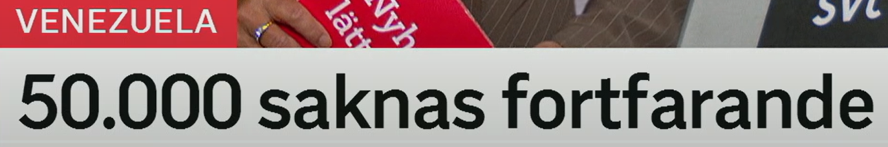
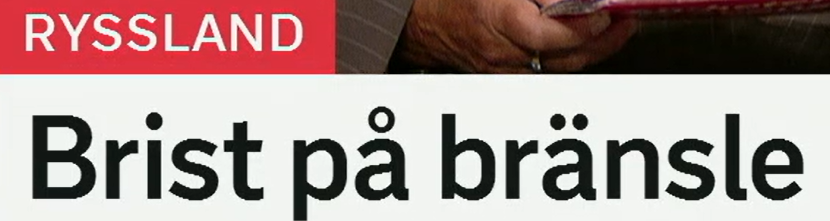
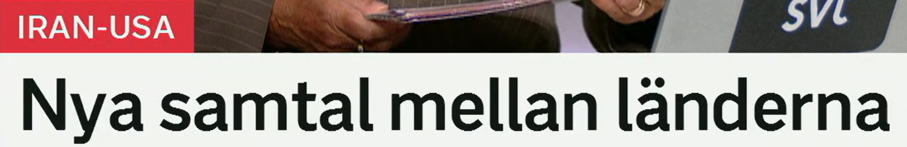
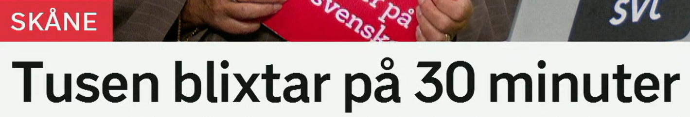
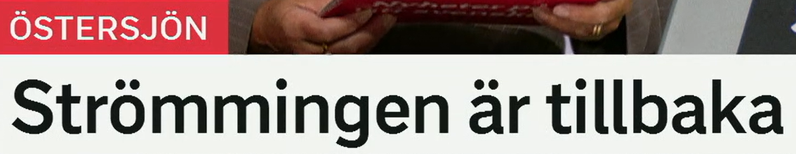

01 · Venezuela
50.000 saknas fortfarande
仍有 5 万人失踪 / 下落不明。
Snipaste_2026-06-30_11-49-04.png
Svenska genom nyhetsrubriker
2026-06-29｜词汇扩展、同义词与高频表达。围绕 5 条短标题，把“看得懂”进一步变成“说得出、写得出”。
数据来源：本文件夹内 SVT 标题截图
学习重点：词形变化、近义辨析、固定搭配、新闻语体
识别状态：5 条标题均清晰，无待确认项
标题按截图文件名顺序排列；栏目标签用于提供主题背景，不额外推断报道细节。
50.000 saknas fortfarande
仍有 5 万人失踪 / 下落不明。
Snipaste_2026-06-30_11-49-04.png
Brist på bränsle
燃料短缺。
Snipaste_2026-06-30_11-50-58.png
Nya samtal mellan länderna
两国之间举行新的会谈。
Snipaste_2026-06-30_11-51-20.png
Tusen blixtar på 30 minuter
30 分钟内出现一千次闪电。
Snipaste_2026-06-30_11-51-38.png
Strömningen är tillbaka
水流 / 环流回来了。
Snipaste_2026-06-30_11-52-03.png

仍有 5 万人失踪 / 下落不明。
标题大意：标题只陈述“仍有 5 万人处于失踪状态”。截图本身未说明原因、时间范围或统计口径，因此不在此延伸新闻事实。
缺少；不见；下落不明。标题中表示“被列为失踪 / 尚未找到”。
词形：saknas – saknades – saknats
近义：vara försvunnen, vara borta
反义：finnas, vara återfunnen
搭配：saknas efter olyckan; fortfarande saknas
辨析：sakna någon 是“想念某人”；någon saknas 是“某人不见了”。
场景：新闻、警方通报、日常盘点都常见。
Tre personer saknas fortfarande. 仍有三人失踪。
En viktig uppgift saknas i rapporten. 报告中缺少一项重要信息。
Jag saknar min familj. 我想念家人。（注意此处是主动动词 sakna）
仍然、还是。标题中强调该状态尚未结束。
词形：副词，不变形
近义：ännu, alltjämt（后者更正式）
反义：inte längre（不再）
搭配：fortfarande okänd; fortfarande kvar
语序：主句中通常放在限定动词后：Hon är fortfarande där.
场景：日常与新闻都高频。
Orsaken är fortfarande okänd. 原因仍然不明。
Arbetet pågår fortfarande. 工作仍在进行。

燃料短缺。
标题大意：标题表达某处存在燃料供应不足。它是典型的无动词名词短语，未说明短缺原因或程度。
缺乏、短缺。标题中指燃料供应不足。
词形：en brist – bristen – brister – bristerna
近义：underskott, knapphet, avsaknad
反义：överskott; gott om
搭配：brist på personal, bostäder, mat
结构：det råder brist på … 是正式新闻句型。
场景：新闻、经济、医疗和正式报告高频。
Det råder brist på sjuksköterskor. 护士人手短缺。
Företaget har brist på råvaror. 该公司缺少原材料。
Det finns gott om tid. 时间很充足。（反义表达）
燃料。可泛指汽油、柴油、航空燃料、生物燃料等。
词形：ett bränsle – bränslet – bränslen – bränslena
近义：drivmedel（尤指交通工具燃料）
相关词：bensin, diesel, biobränsle
搭配：bränslepris, bränslebrist, fossila bränslen
构词：bränna“燃烧”与 bränsle 同词族。
场景：能源、交通、经济与环境报道。
Priset på bränsle har stigit. 燃料价格上涨了。
Bussen körs med förnybart bränsle. 这辆公交车使用可再生燃料。

两国之间举行新的会谈。
标题大意：两国之间出现新一轮会谈。栏目标签指出双方为 Iran–USA；标题本身没有交代议题、形式或结果。
谈话、通话、会谈。标题的复数语境更接近外交“会谈”。
词形：ett samtal – samtalet – samtal – samtalen
近义：diskussion, dialog, förhandling
辨析：förhandling 更强调协商条件；dialog 强调持续沟通。
搭配：inleda samtal, hålla samtal, fredssamtal
动词：samtala med någon om något
场景：外交新闻正式，也可指日常谈话。
Länderna ska inleda nya samtal. 两国将开始新一轮会谈。
Parterna fortsätter dialogen. 各方继续对话。
Vi hade ett långt samtal i går. 我们昨天进行了一次长谈。
在……之间。标题中连接参与会谈的两个国家。
词形：介词，不变形
相关：bland（在一群 / 多个对象之中）
反向概念：inom（在……内部）
搭配：samarbete mellan; skillnad mellan
结构：mellan A och B
场景：日常和正式语体都高频。
Avtalet gäller mellan de två länderna. 该协议适用于这两个国家之间。
Det finns stora skillnader mellan regionerna. 各地区之间存在很大差异。
这些 / 那些国家。标题中回指栏目标签已经点明的两个国家。
词形：ett land – landet – länder – länderna
近义：staterna（国家实体，较正式）
相关词：grannland, hemland, utland
搭配：de nordiska länderna; mellan länderna
语法：不规则复数元音变化：land → länder。
场景：地理、政治、国际新闻。
Länderna har skrivit under ett avtal. 这些国家已经签署一项协议。
Samarbetet mellan länderna ökar. 国家间的合作正在增加。

30 分钟内出现一千次闪电。
标题大意：标题用“数量 + 时间窗口”突出闪电出现的密度。它没有动词，完整表达可补成 Det registrerades tusen blixtar på 30 minuter.
闪电、闪光。标题用复数 blixtar。
词形：en blixt – blixten – blixtar – blixtarna
相关：åska（雷暴 / 雷声），dunder（雷鸣）
构词：blixtnedslag（雷击），åskväder（雷雨）
搭配：blixten slår ner; träffas av blixten
辨析：blixt 是光；åska 指雷暴现象。
场景：天气新闻，也可比喻极快。
Blixten slog ner nära huset. 闪电击中了房屋附近。
Ett kraftigt åskväder drog in. 一场强雷暴移入该地区。
Himlen lystes upp av blixtar. 天空被一道道闪电照亮。
在 30 分钟内，强调完成量或该时间窗口内发生的数量。
结构：på + 时间段
近义：inom loppet av 30 minuter（较正式）
对比：i 30 minuter 表示“持续 30 分钟”。
对比：om 30 minuter 表示“30 分钟后”。
搭配：på kort tid; på bara en timme
场景：统计、比赛、效率与突发新闻。
Hon läste boken på två dagar. 她两天内读完了这本书。
Det regnade i två timmar. 雨持续下了两个小时。
Mötet börjar om tio minuter. 会议十分钟后开始。

水流 / 环流回来了。
标题大意：波罗的海语境中的某种水流或环流再次出现。仅凭标题无法确定它具体指哪一种海洋过程，因此这里专注于词义与用法。
流动、流向、环流。标题中根据“Östersjön”栏目理解为水体流动。
词形：en strömning – strömningen – strömningar – strömningarna
近义：flöde, cirkulation, ström（依语境）
反义概念：stagnation, stillastående vatten
搭配：havets strömningar; atmosfäriska strömningar
词族：strömma（流动），inströmning（流入）
场景：海洋、天气、物理等较正式语境。
Havets strömningar påverkar klimatet. 海洋环流影响气候。
Vattnet strömmar in genom sundet. 水流经海峡涌入。
Forskarna mäter strömningen. 研究人员正在测量水流。
回来了、恢复了、重新出现。标题中表示该流动现象再次出现。
原形：vara tillbaka
近义：har återvänt, har kommit tillbaka, är åter
反义：är borta, har försvunnit
搭配：snart tillbaka; tillbaka på jobbet
语气：är åter 更凝练正式；är tillbaka 很通用。
场景：新闻标题与日常口语均高频。
Tågen är tillbaka i trafik. 列车已恢复运行。
Hon är tillbaka på jobbet. 她回来上班了。
Problemet har kommit tillbaka. 问题又出现了。
先记粗体搭配，再用例句确认语感；比孤立背中文释义更容易迁移到新标题。
| 瑞典语 | 中文意思 | 高频搭配 | 近义表达 | 例句 | 记忆提示 |
|---|---|---|---|---|---|
| saknas | 缺少；失踪 | fortfarande saknas | vara försvunnen | Två personer saknas. | “某人不见了”用 saknas |
| sakna | 想念；缺少 | sakna någon | längta efter | Jag saknar dig. | 主动者放句首 |
| fortfarande | 仍然 | fortfarande okänd | ännu, alltjämt | Frågan är fortfarande öppen. | 反义：inte längre |
| brist | 短缺 | brist på personal | underskott, knapphet | Det råder brist på mat. | 固定介词 på |
| bränsle | 燃料 | fossila bränslen | drivmedel | Bränslet räcker inte. | ett-名词 |
| samtal | 谈话；会谈 | inleda samtal | dialog, diskussion | Parterna håller samtal. | 单复数同形 |
| förhandling | 谈判 | inleda förhandlingar | överläggning | Förhandlingarna fortsätter. | 强调条件协商 |
| mellan | 在……之间 | mellan A och B | — | Avståndet mellan städerna är kort. | 多对象群体常用 bland |
| länderna | 这些国家 | mellan länderna | staterna | Länderna samarbetar. | land → länder |
| blixt | 闪电 | blixten slår ner | — | Vi såg en blixt. | 光是 blixt，雷暴是 åska |
| åskväder | 雷雨、雷暴 | kraftigt åskväder | oväder | Ett åskväder närmar sig. | åska + väder |
| på kort tid | 短时间内 | öka på kort tid | inom kort tid | Mycket hände på kort tid. | 强调时间内完成量 |
| strömning | 流动、环流 | havets strömningar | flöde, cirkulation | Strömningen har ändrats. | 来自动词 strömma |
| påverka | 影响 | påverka klimatet | inverka på | Vädret påverkar trafiken. | 直接接宾语，无介词 |
| vara tillbaka | 回来、恢复 | tillbaka i trafik | återvända, vara åter | Servicen är tillbaka. | 反义：vara borta |
下面是由本组标题引出的新闻瑞典语工具箱，用来帮助你读懂其他报道；这些例句是语言示例，不是在补充本组新闻事实。
inträffa, ske, bryta ut
En olycka inträffade. 发生了一起事故。
leda till, orsaka, få till följd
Ovädret ledde till problem. 恶劣天气导致问题。
påverka, drabba, beröra
Trafiken påverkas. 交通受到影响。
varna för, utfärda en varning
SMHI varnar för åska. SMHI 警告有雷暴。
utreda, undersöka, granska
Polisen utreder händelsen. 警方调查该事件。
öka / minska; stiga / sjunka
Priserna har stigit. 价格上涨了。
regeringen 政府；polisen 警方；experter 专家；invånare 居民。
område 地区；kris 危机；risk 风险；läge 形势。
Brist på bränsle 省略“存在”；Tusen blixtar … 省略“记录到 / 出现”。
先独立完成，再展开答案。建议把答错的搭配整句抄写一次。